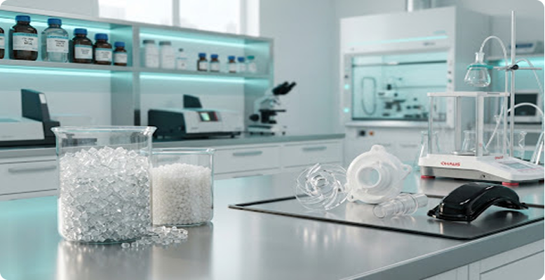
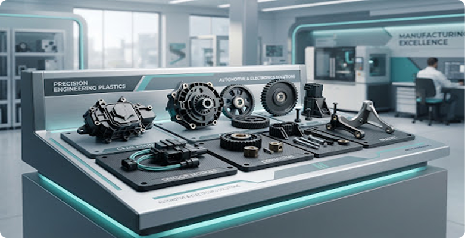

제품소개
제품소개
HOME > 제품소개 > 합성수지
합성수지Synthetic Resin Solutions
우수한 내구성과 가공성으로 일상생활부터 첨단 산업까지 아우르는 고기능성 합성수지 솔루션입니다.
-
- 01 / POLYMER SYNTHESIS탁월한 가공성과 정밀 치수 안정성
- 균일한 분자 구조 설계를 바탕으로 우수한 유동성과 정밀 성형성을 제공하여 복잡한 금형 구조에서도 완벽한 외관과 기계적 물성을 실현합니다.

-
- 02 / MECHANICAL EXCELLENCE내충격성과 고강성의 최적 엔지니어링 밸런스
- 자동차 내외장재와 전기전자 부품의 엄격한 내구 기준을 충족하는 강도와 열변형 저항성을 확보하여 극한의 사용 환경에서도 장기적인 신뢰성을 보장합니다.

INDUSTRY SOLUTIONSKey Applications
첨단 산업과 일상 전반에 적용되는 금호석유화학의 대표 솔루션
-
kitchen
가전제품HOME APPLIANCES
냉장고 라이너, 세탁기 패널
-
directions_car
자동차 부품AUTOMOTIVE
도어 트림, 라디에이터 그릴
-
devices
전기/전자ELECTRONICS
모니터 프레임, 외장재
주요 수지 대표 스펙 요약
tablePS · ABS · EPS 통합 물성 요약
| 대표 그레이드 | 주요 특성 및 장점 | 용융지수 (MI 200℃) | 인장강도 (Yield) | 추천 적용 용도 |
|---|---|---|---|---|
| GPPS 150 | 고투명성, 우수한 광학 특성 및 성형 유동성 극대화 | 3.0 g/10min | 49 MPa | 투명 식품용기&commal 일회용 컵 |
| HIPS 425 | 고충격 강도, 저온 내구성 및 탁월한 압출 진공성형성 | 4.5 g/10min | 28 MPa | 냉장고 내부 라이너(ESCR), 완구 |
| ABS 750 | 우수한 기계적 물성 밸런스 및 표면 광택도 우수 | 19 g/10min | 47 MPa | 자동차 내외장재, 전기전자 하우징 |
| EPS 301 | 고발포 배율 및 균일한 셀 구조를 통한 우수한 단열성 | 발포성형 | 15 MPa | 건축 단열재, 농수산물 완충 포장재 |